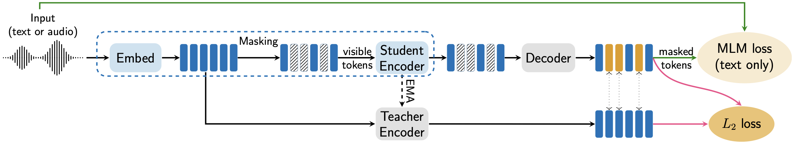

Pantagruel: Unified Self-Supervised Encoders for French Text and Speech
Language Resources and Evaluation Conference (LREC), 2026
PDF HuggingFace Models Code
Abstract
We release Pantagruel models, a new family of self-supervised encoder models for French text and speech. Instead of predicting modality-tailored targets such as textual tokens or speech units, Pantagruel learns contextualized target representations in the feature space, allowing modality-specific encoders to capture linguistic and acoustic regularities more effectively. Separate models are pre-trained on large-scale French corpora, including Wikipedia, OSCAR and CroissantLLM for text, together with MultilingualLibriSpeech, LeBenchmark, and INA-100k for speech. INA-100k is a newly introduced 100,000-hour corpus of French audio derived from the archives of the Institut National de l’Audiovisuel (INA), the national repository of French radio and television broadcasts, providing highly diverse audio data. We evaluate Pantagruel across a broad range of downstream tasks spanning both modalities, including those from the standard French benchmarks such as FLUE or LeBenchmark. Across these tasks, Pantagruel models show competitive or superior performance compared to strong French baselines such as CamemBERT, FlauBERT, and LeBenchmark2.0, while maintaining a shared architecture that can seamlessly handle either speech or text inputs. These results confirm the effectiveness of feature-space self-supervised objectives for French representation learning and highlight Pantagruel as a robust foundation for multimodal speech-text understanding.

Citation
@inproceedings{le2026pantagruel,
title = {Pantagruel: Unified Self-Supervised Encoders for French Text and Speech},
author = {Phuong-Hang Le and
Valentin Pelloin and
Arnault Chatelain and
Maryem Bouziane and
Mohammed Ghennai and
Qianwen Guan and
Kirill Milintsevich and
Salima Mdhaffar and
Aidan Mannion and
Nils Defauw and
Shuyue Gu and
Alexandre Audibert and
Marco Dinarelli and
Yannick Est{\`e}ve and
Lorraine Goeuriot and
Steffen Lalande and
Nicolas Herv{\'e} and
Maximin Coavoux and
Fran{\c c}ois Portet and
{\'E}tienne Ollion and
Marie Candito and
Maxime Peyrard and
Solange Rossato and
Benjamin Lecouteux and
Aur{\'e}lie Nardy and
Gilles S{\'e}rasset and
Vincent Segonne and
Sol{\`e}ne Evain and
Diandra Fabre and
Didier Schwab},
booktitle = {Proceedings of the 15th Language Resources and Evaluation Conference (LREC)},
publisher = {European Language Resources Association},
year = {2026}
}